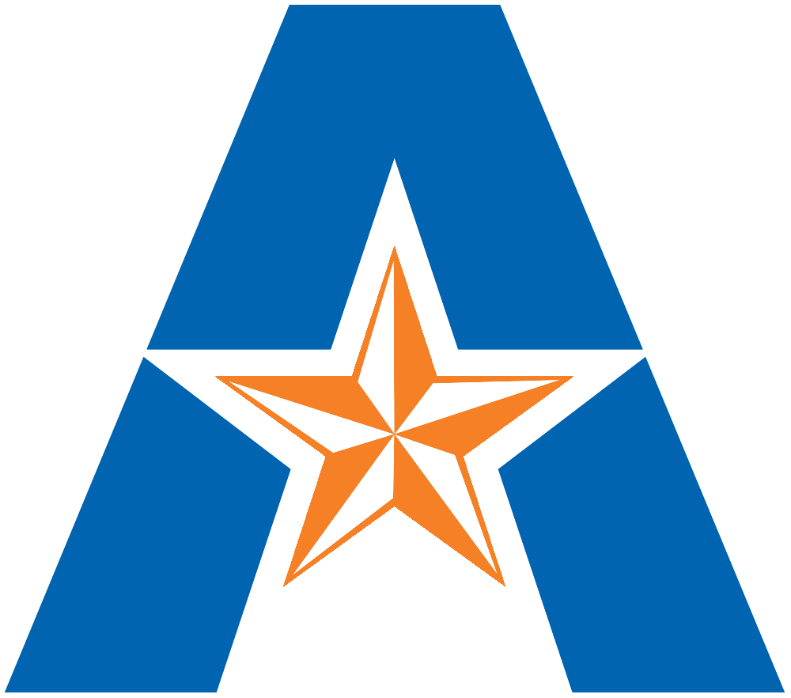

I'm Akhil Satya Sai Cherukuri, a junior studying Computer Science at the University of Texas at Arlington. I've been passionate about programming since 10th grade and have been self-learning ever since.
In addition to my academic journey, I actively work on computational research in bioinformatics, develop Python and SQL solutions, and participate in open-source projects. I enjoy exploring machine learning, building side projects, and contributing to innovative solutions.
Outside of coding, I'm deeply interested in mentoring others and staying up to date with the latest in tech and science. My goal is to bridge my technical skills with impactful real-world applications.

B.S. in Computer Science, College of Engineering
Minor in Data Science – bridging the principles of CSE with AI and machine learning.
Recognized for academic excellence by earning a place on the Dean's List for 2024
GPA: 4.0
Dr. Matthew Fujita Lab, Department of Biology, UTA
June 2025 – Present
A web app that delivers live stock market news using a financial news API. Built with Python, Flask, HTML, CSS, and JavaScript.
Automates scraping rental listings from Zillow and populates a Google Spreadsheet via Google Forms using Python and Selenium.
A group data mining project that classifies movies as blockbusters by financial and popularity metrics using Decision Tree, Random Forest, Logistic Regression, and KNN models.